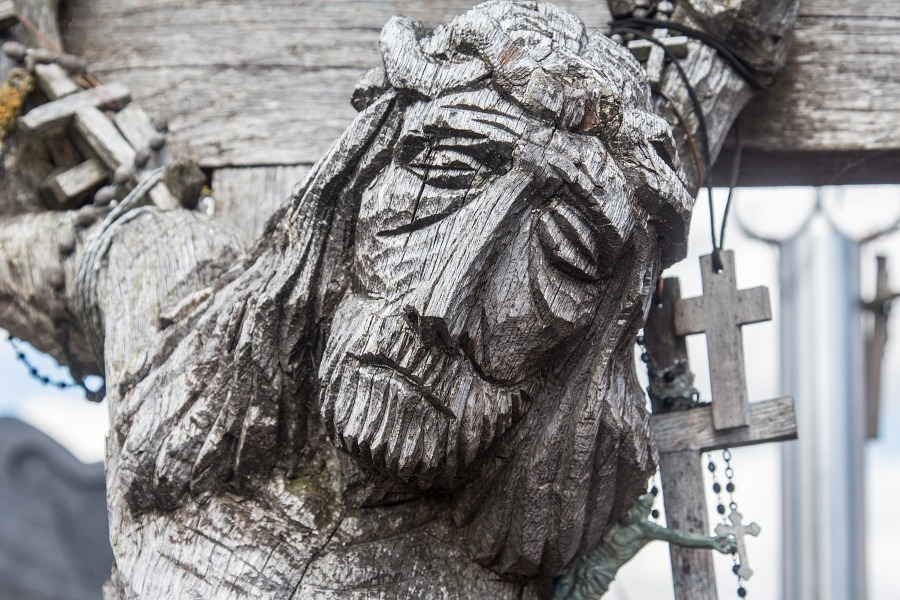
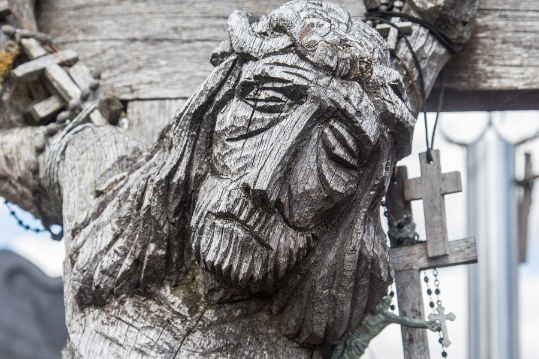

Галерея
Фотографии Эстонии
Куда приводят мечты о романтическом средневековье, очищенном от грубой исторической правды вдохновенным пером Вальтера Скотта? Разумеется, в Эстонию! Доисторические ландшафты, убаюканные рокотом волн, видят красочные сны о славной эпохе, оставившей на память ожерелье неприступных замков и величественных церквей. За бастионными стенами время замедляет бег, сохраняя для потомков красивые обычаи, старинные ремёсла и руны, пробуждающие к жизни былинных богатырей. Добро пожаловать в заповедник сказок и легенд!


Фотографии Латвии
Латвия хорошеет с каждым годом. Европейская страна с миниатюрными сказочными городами, чистыми пляжами, целебными источниками влечёт к себе гостей со всей Европы. Старинные замки, разбросанные вдоль туристических троп, только добавляют шарма этой строгой красавице. А если добавить сюда замечательный сервис и комфортный отдых, то поводов приехать в Латвию становится еще больше.


Фотографии Литвы
Маленькая европейская страна привлекает гостей невысокими ценами и неожиданно большим числом достопримечательностей. Тут есть всё, и пляжи на берегу Балтийского моря, и чудные уютные города, и хорошие санатории. Прохладное лето и спокойная атмосфера в стране с древней историей подойдут тем, кто любит комфортный отдых.
 
